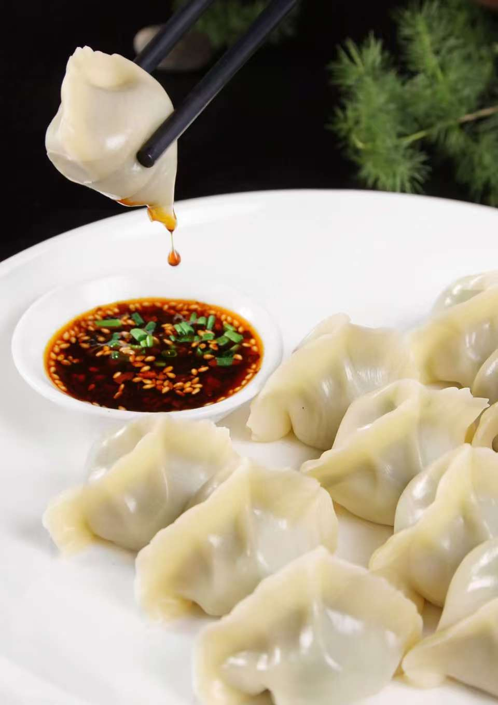
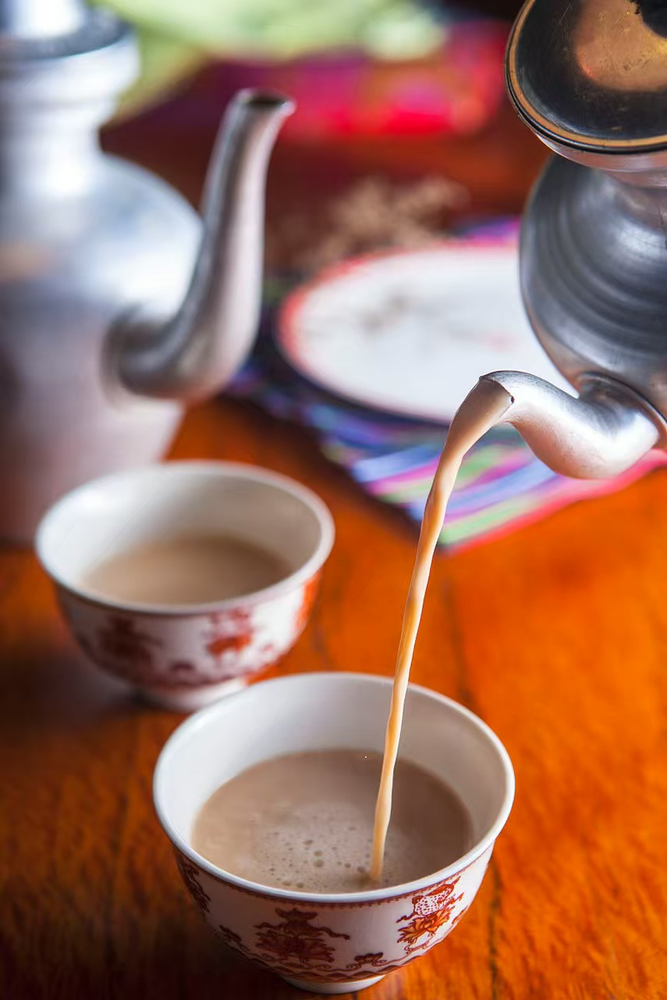
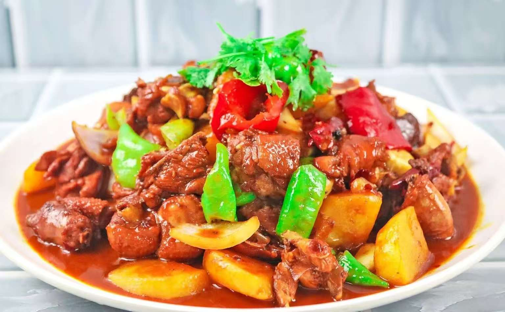
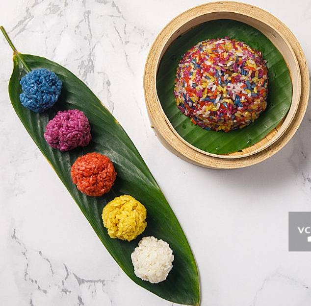
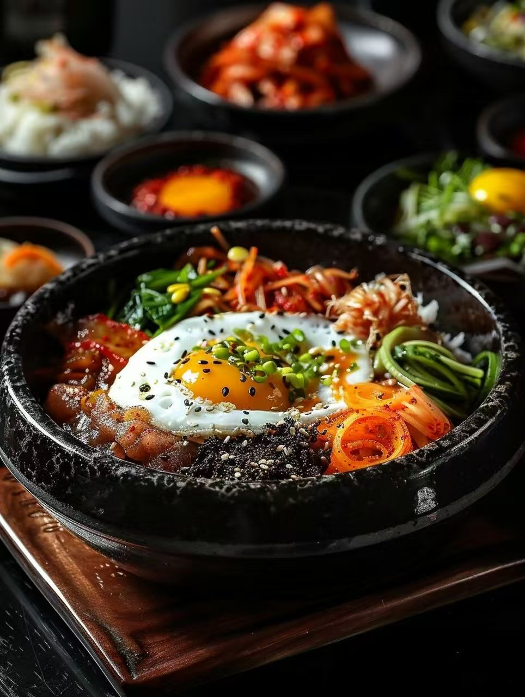
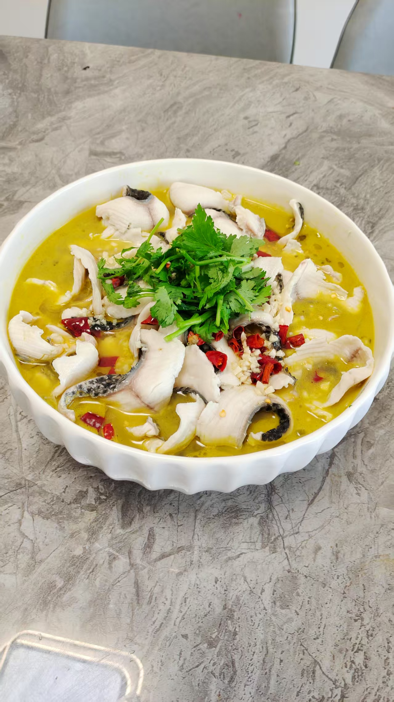

古老而神奇的东方大地，5000多年的悠久历史，孕育出了勤劳而朴素的中国人民。在这片土地上，56个民族共同编织了一幅绚丽多彩的饮食文化图卷。
我们对各民族特色美食的热爱，就如同对这片古老土地的深深眷恋。
这是味蕾上的触动，也是心灵上的抚慰。
无论深处异国还是他乡，当品尝上一口这些美食的时候，就仿佛回到了离开许久的故乡，与自己的家人申请的拥抱，互诉思情。
中国人的深刻情感，蕴藏在这多种多样的民族特色美食中。
汉族的饺子，圆润饱满，寓意着团圆和美满，每一口都是家的味道；
藏族的酥油茶，浓郁醇厚，仿佛能抵御高原的严寒，给人以温暖的力量；
维吾尔族的大盘鸡，那鲜红的辣椒与金黄的鸡肉交织，是热情与活力的象征；
壮族的五色糯米饭，那斑斓的色彩，如同壮乡的山水，让人心旷神怡；
蒙古族的手扒肉，粗犷中带着草原的豪迈；回族的清真食品，纯净中透着信仰的虔诚；
朝鲜族的冷面，清凉中带着一丝酸甜，如同夏日里的一缕清风；
苗族的酸汤鱼，酸辣中带着鲜美，如同苗族人民的热情好客；
每一道菜，都是一个故事，每一口食物，都是一段历史。
这些美食，如同中华民族的血脉，流淌在每一个中国人的心中，在品尝的同时，也能感受到那份来自祖先的智慧和对美好生活的向往。





